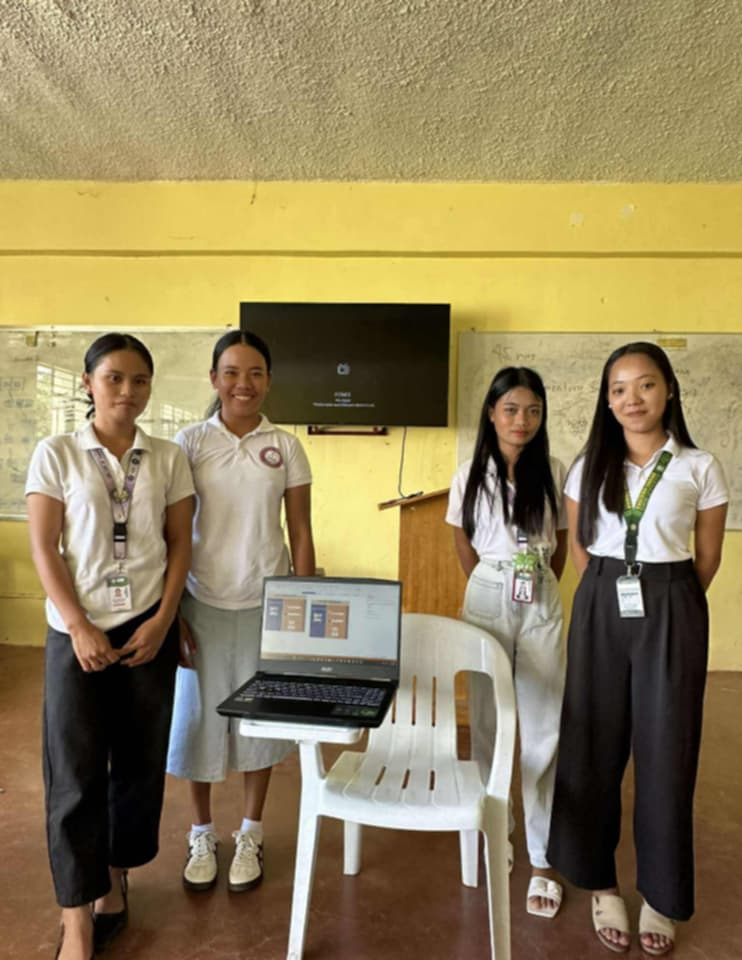
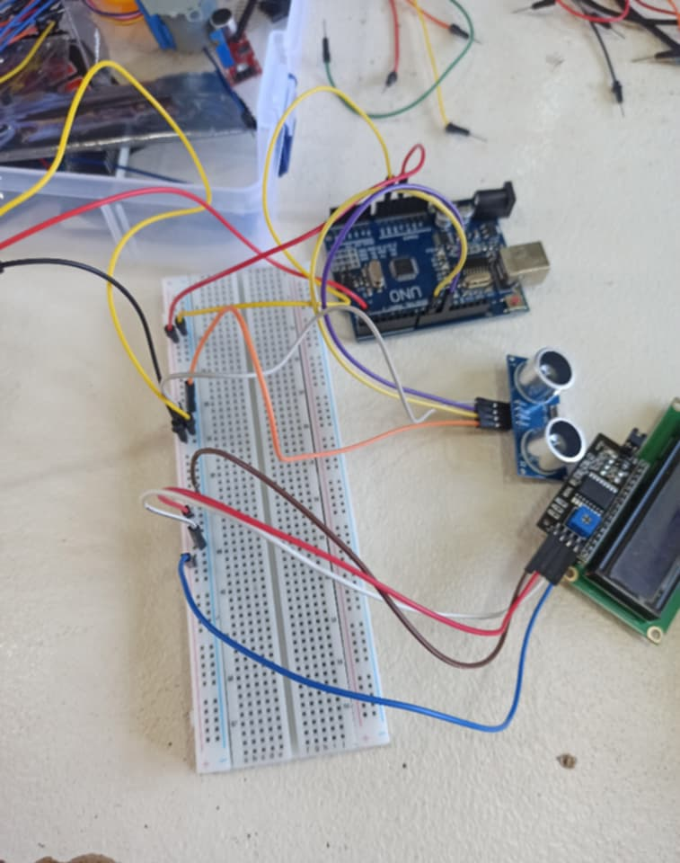
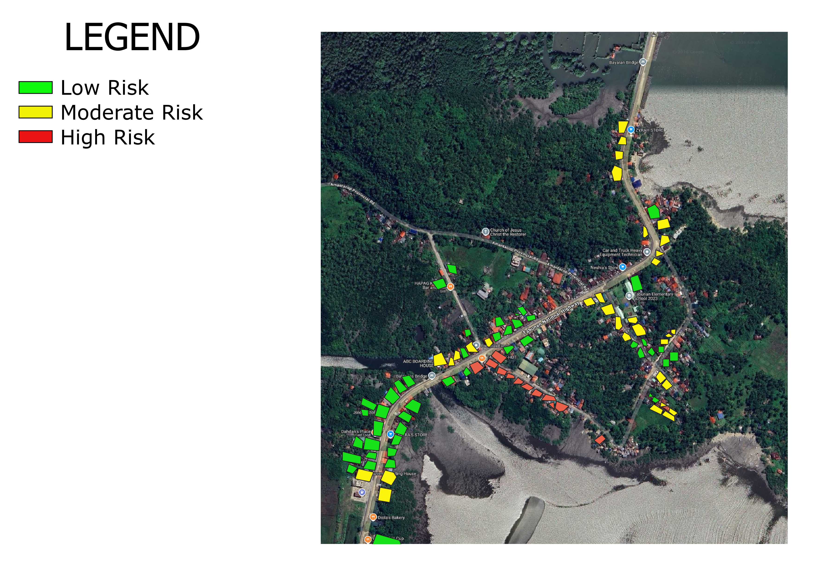

My Projects

Employee Management System (C++)
An Employee Management System is a simple C++ program designed to help manage and organize employee information and records. I served as the team leader, where I helped coordinate my group and guided the development of the system.

Task Manager System
A web-based task management system developed using CodeIgniter 4 to help users organize and manage tasks more efficiently. I contributed to the design and worked with my group in developing the system.

Arduino Automatic Door Opener
An Arduino-based Automatic Door Opener designed to open a small door when a person approaches using a sensor. The project also displays the system status on an LCD.I worked with my group in assembling and developing the project.

QGIS Hazard Identification and Classification Brgy. Tabunan
A QGIS project focused on identifying and classifying boarding houses in Brgy. Tabunan based on different hazard zones. I used tools such as Intersection and Difference to identify affected and unaffected boarding houses and classify them into low, moderate, and high risk.